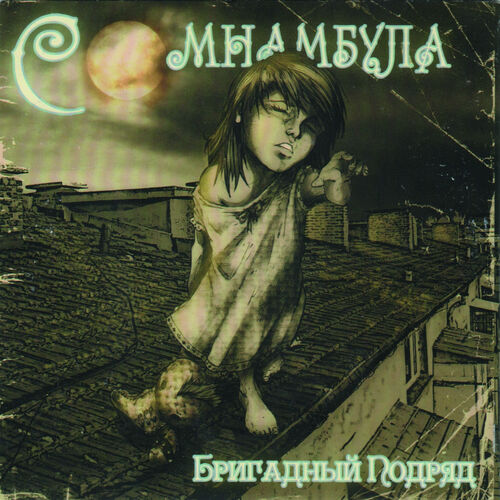

People are strange
you're a stranger
Faces look ugly
When you're alone
Women seem wicked
When you're unwanted
Streets are uneven
When you're down
People are strange you're a stranger Faces look ugly When you're alone
Women seem wicked
When you're unwanted
Streets are uneven
When you're down

В смешной ночной рубашке шагает по карнизу С закрытыми глазами девчонка лет шести У нас бегут мурашки, мы наблюдаем снизу Рты залепив руками, не зная как спасти
Тише, тише — ведь ей не надо слышать
Ведь ей не надо знать того, что знаем мы
Тише, тише — она уже на крыше
Не надо прерывать её цветные сны